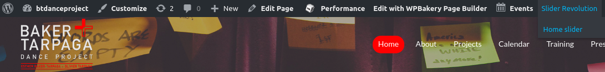
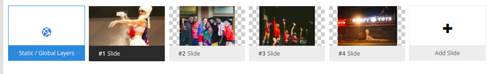
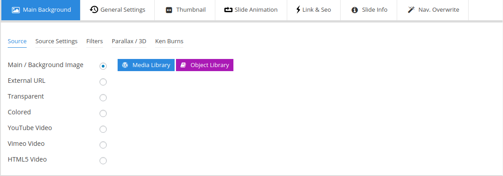
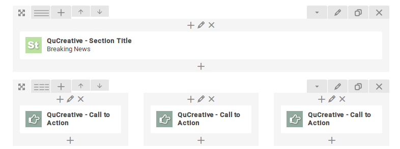
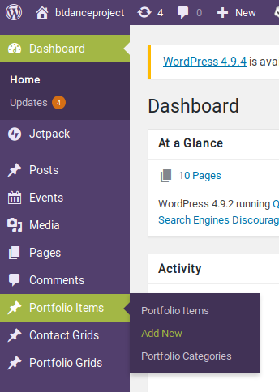
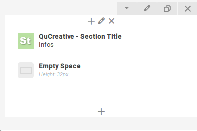
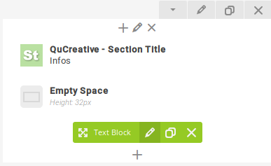
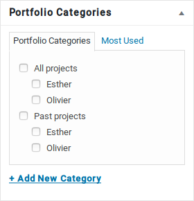
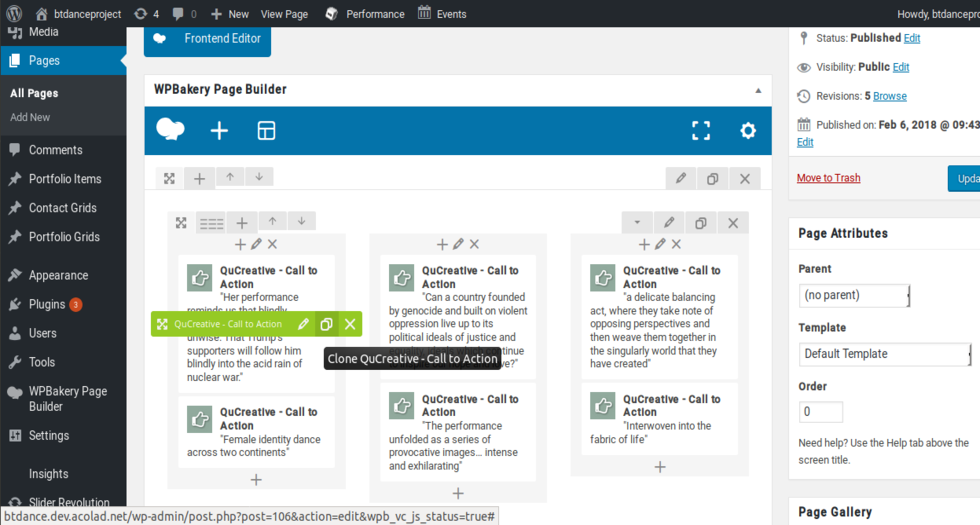

Introduction
To modify anything, you first need to be logged in. In order to do so go to btdanceproject.com/wp-admin
When modifying things like a page, a post, a portfolio item, you'll be able to either preview or update it. We advice to always preview it before publishing, because you can always leave the page without saving when you don't want to keep your changes. When you update it, it's saved and live.
Home :
Slider : You can change the images.
Breaking news : You can change the text and if there's a button with a link or not.
Performance Works: Automatically display the most recent project.
Funding support: Is set.
Modifying The Slider
First, you need to be on your Home page and logged in. In the Wordpress command bar, go in Slider Revolution -> Home Slider. 
You land on a page where these are your slides : 
Click on the picture of the slide you want to modify.
In the menu under it you have your main image : 
Click on "Media library" and either select your picture that's in the wordpress library or upload files.
You need to save for each slide you modify, the button is in the top right corner.
Home: Add news
First, you need to be on your Home page and logged in. In the Wordpress command bar, go in +Edit page. In the WPBakery Page
Builder this are your news :

Click on the edit button on the one you want to modify and change it's content.
If you want to add or delete a button :
A button needs three fields : a Read More text, Read More Link, and a button style. Simply fill them or empty them if you want or not a button.The Read more Text is always "READ MORE" and the button style is always : " {"style":"style-hallowred","padding":"padding-small","rounded":""} ".
Project:
To add a portfolio item you need to click 'Add New'

* On the loaded page in "Add New Post" ==> Enter the title you want (This one won't be display on the front page).
Then in the WP Bakery Page Builder
!! You just have to change on the GREEN blocks NOT THE OTHERS !! by clicking on the pencil
Every time you have the button 'Save changes' just do it ;-)
Take attention of block existing but not visible.
You have to slide your mouse to see them


- Title
- * Change the Title by 'Text Block'
- QuCreative - Video Player
- * add ID's number of your Vimeo page after : https://vimeo.com/ (>ex : https://vimeo.com/183772483)
- * Delete the brown Cover
- * Add the image Cover you want by clicking on 'the Add Image'
- QUCreative - Image Slider
- * Delete the grey Cover
- * Add every image you want by clicking on 'the Add Image'
- QuCreative - Section Title : FOR EACH Section Title DO THE SAME
- * Scroll to : First Line and then change the Title if you want
- Under 'Empty Space' search and Edit 'Text Block' FOR EACH Text Block DO THE SAME
- Write the text of this block
From Top to Bottom and Left to Right
When your text is done, just go to the right of the window and you'll see :
Portfolio Categories
- Where to select
- * If You are working together on a New CURRENT Project : 'All Projects'
- * If Esther is working on a New CURRENT Project : 'All Projects ==> Esther'
- * If Olivier is working on a New CURRENT Project : 'All Projects ==> Olivier'
- * If You are working together on a PAST Project : 'Past Projects'
- * If Esther is working on a PAST Project : 'Past Projects ==> Esther'
- * If Olivier is working on a PAST Project : 'Past Projects ==> Olivier'
Don't FORGET to UPDATE your page to save it !! by clicking just above Portfolio Categorie

Press: Add a new excerpt
First, you need to be on your Press page and logged in. In the Wordpress command bar, go in +Edit Page.
You land on a page where all the "QuCreative - Call to action" are your excerpts.The idea is to duplicate one of the other excerpts and modify its text. So you can hover onto one to access it's own menu, and duplicate it.  You can drag and drop it if you want you move it, but make sure to respect the same structure. It's safer not to move them, and so to duplicate one just below the place you want to add a new one.
Then on the one you want to modify, you can click it's edit button and modify the title, content, and Read More Link fields as the previous one. Then save your item, preview your page, and save it.